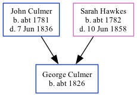

George Culmer c1826 -
[ Home ] | [ Calendar ] | [ Surnames Index ] | [ Family History ]The child of John Culmer (a parish clerk) and Sarah Hawkes, George Culmer, the four times great-uncle of <a href="I1.html">Nigel Horne</a>, was born in Stourmouth, Kent, England <i>c.</i> 1826<span class="citation">1,2,3,4,5,6,7,8</span> and baptized there on Apr 22, 1827.</p><p>Throughout his life, George lived in several places: at his birthplace in 1841<span class="citation">1</span>; in Blean, Kent, England in 1851<span class="citation">2</span>; at his birthplace in 1861<span class="citation">3</span> (the same place as his mother had been living in 1841); in Preston, Faversham, Kent in 1871<span class="citation">4</span>; and in Harbledown, Kent in 1881<span class="citation">5</span>, in 1891<span class="citation">6</span>, in 1901<span class="citation">7</span> and on Apr 2, 1911<span class="citation">8</span>.
Parents
- John was born c. 1781
- Sarah Anne was born c. 1782
Citations
- 1841 England Census Online publication - Provo, UT, USA: The Generations Network, Inc., 2006.Original data - Census Returns of England and Wales, 1841. Kew, Surrey, England: The National Archives of the UK (TNA): Public Record Office (PRO), 1841. Data imaged from the National
- 1851 England Census Online publication - Provo, UT, USA: The Generations Network, Inc., 2005.Original data - Census Returns of England and Wales, 1851. Kew, Surrey, England: The National Archives of the UK (TNA): Public Record Office (PRO), 1851. Data imaged from the National
- 1861 England Census Online publication - Provo, UT, USA: The Generations Network, Inc., 2005.Original data - Census Returns of England and Wales, 1861. Kew, Surrey, England: The National Archives of the UK (TNA): Public Record Office (PRO), 1861. Data imaged from the National
- 1871 England Census Online publication - Provo, UT, USA: The Generations Network, Inc., 2004.Original data - Census Returns of England and Wales, 1871. Kew, Surrey, England: The National Archives of the UK (TNA): Public Record Office (PRO), 1871. Data imaged from the National
- 1881 England Census Online publication - Provo, UT, USA: The Generations Network, Inc., 2004. 1881 British Isles Census Index provided by The Church of Jesus Christ of Latter-day Saints © Copyright 1999 Intellectual Reserve, Inc. All rights reserved. All use is subject to the
- 1891 England Census Online publication - Provo, UT, USA: The Generations Network, Inc., 2005.Original data - Census Returns of England and Wales, 1891. Kew, Surrey, England: The National Archives of the UK (TNA): Public Record Office (PRO), 1891. Data imaged from The National
- 1901 England Census Online publication - Provo, UT, USA: The Generations Network, Inc., 2005.Original data - Census Returns of England and Wales, 1901. Kew, Surrey, England: The National Archives of the UK (TNA): Public Record Office (PRO), 1901. Data imaged from the National
- 1911 England Census Online publication - Provo, UT, USA: Ancestry.com Operations, Inc., 2011.Original data - Census Returns of England and Wales, 1911. Kew, Surrey, England: The National Archives of the UK (TNA), 1911. Data imaged from the National Archives, London, England. (Age in 1911: 85Marital Status: Widowed; Relation to Head: Father-in-law)
Family Tree
Generated by Ged2Site. Last updated on Jul 20, 2025